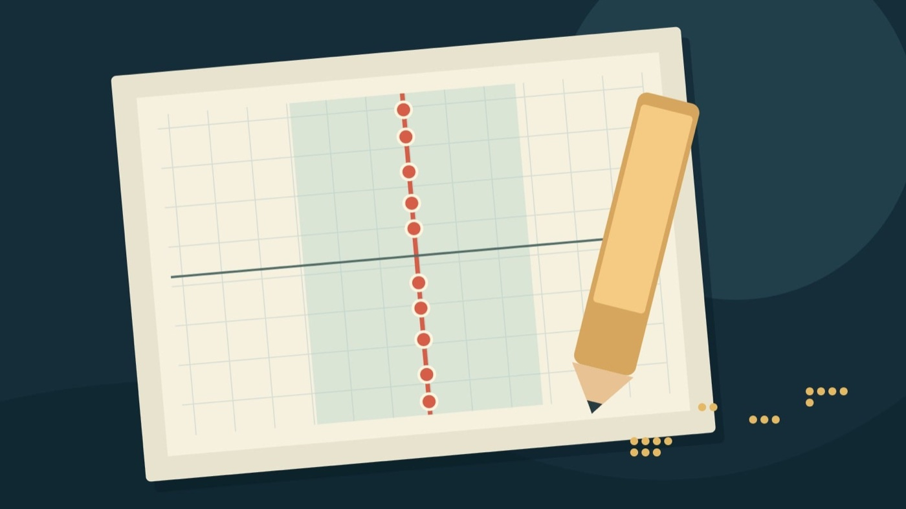
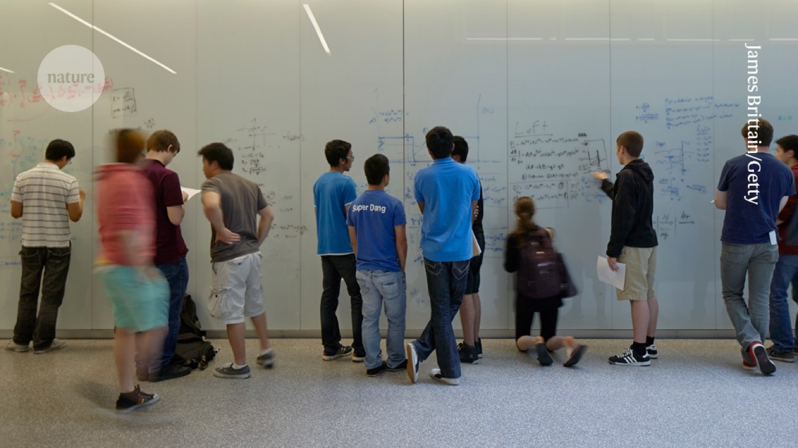
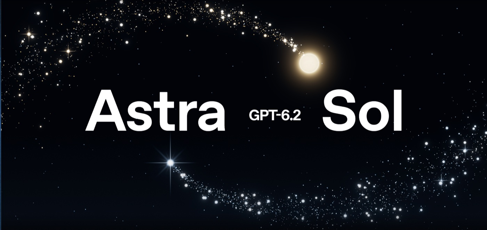
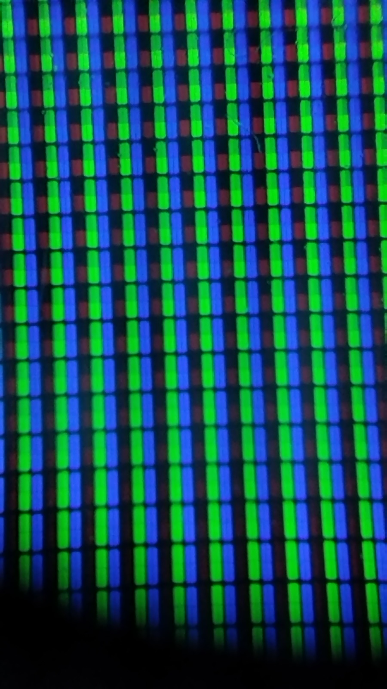
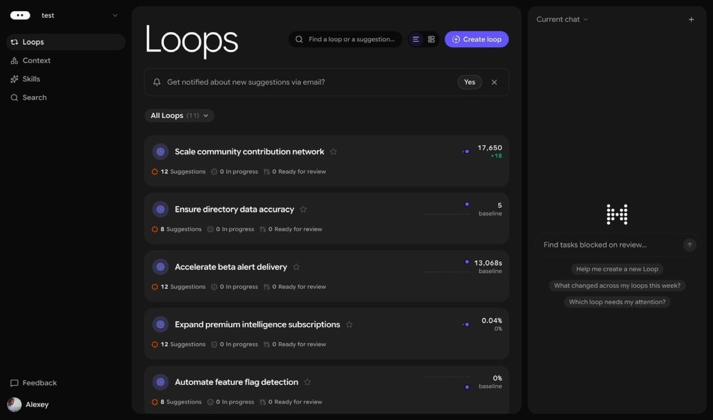
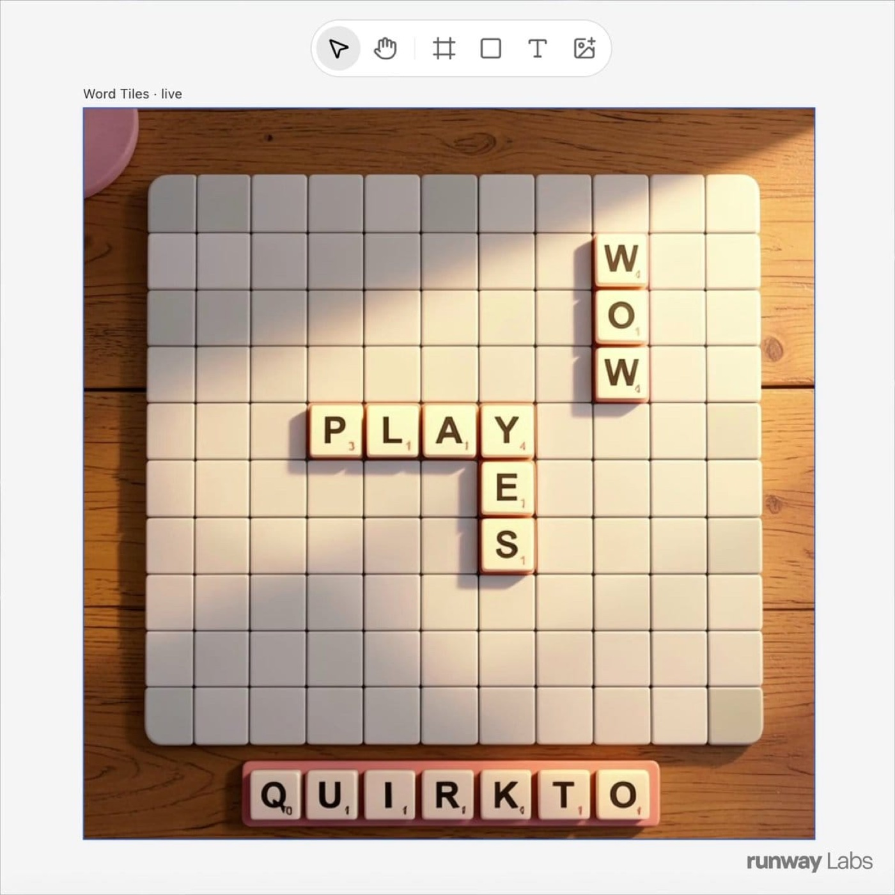
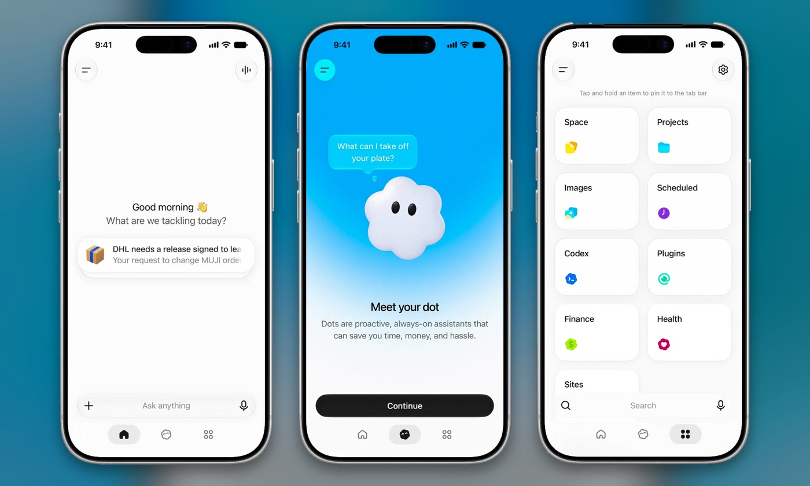

한눈에 보기: 11개 항목 판정
이번 주 메모에 올라온 항목을 하나씩 확인했습니다. 출시된 것과 코드 유출·티저에 그친 것, 그리고 날짜나 이름을 바로잡아야 하는 것을 나눴습니다.
| 항목 | 판정 | 핵심 |
|---|---|---|
| GPT-6.2 Astra / Sol | 출시됨 | 11월 17일 출시 |
| Gemini 4 Neon | 출시됨 | 11월 16일 유출 후 18일 정식 출시 |
| Gemini 4 Cobalt | 코드 유출만 | 공식 발표 없음 |
| Gemini 4 Helium | 티저만 | 모델 ID·가격 없음 |
| Inkling 2 Mini | 출시됨 | 11월 20일, 오픈 웨이트 · 4비트로 학습 |
| "Gemini Loop" | 확인 | 정확한 명칭은 Stitch Loop. 11월 18일 발표, 대기자 명단 |
| 리만 가설 증명 | 발표 · Lean 검증 Clay 미인정 | P=NP는 풀리지 않음 |
| ChatGPT 리디자인 / dots | 확정 | 한국은 리디자인 대상에서 제외 · 음성은 GPT-Live-1.1 |
| 카카오톡 '라이언' | 날짜 해석 주의 | 12월 16일은 약관 시행일 |
| Gemini Omni 1.2 Flash GIF | 확인 | 한국 포함 |
| FSD v15 Reality View | 확인 | 11월 21일 배포 시작 |
| diffusion-ui | 확인 (Runway Labs) | 연구 프리뷰 |
리만 가설 증명: Lean 검증은 통과, Clay 인정은 아직
Anthropic의 수학자 레벤트 알푀게가 Claude와 함께 리만 가설과 일반화된 리만 가설을 증명했다고 11월 20일 발표했습니다. 증명은 논문이 아니라 Lean 4 코드로 나왔고, 커뮤니티와 독립 연구자들이 컴파일해 확인했습니다. 가설이 무엇인지, 왜 Lean으로 검증하는지, P=NP는 왜 따라 나오는지까지 차례로 짚습니다.

1.1리만 가설이란
- 제타 함수: 1/1s + 1/2s + 1/3s + …처럼 모든 자연수 n에 대해 1/ns를 더한 함수 ζ(s)를 복소수 전체로 넓힌 것입니다.
- 가설: ζ(s) = 0이 되는 점 가운데 음의 짝수(−2, −4, …)에 있는 '자명한 영점'을 빼면, 나머지 영점은 모두 실수부가 정확히 1/2인 세로선(임계선) 위에 있다는 주장입니다.
- 역사: 1859년 리만이 논문에서 제기했고, 2000년 Clay 연구소가 밀레니엄 문제로 지정했습니다. 컴퓨터로 수조 개 영점을 확인했지만 모든 영점에 대한 증명은 없었습니다.


1.2제타 함수 자세히 보기
리만 가설을 이해하려면 제타 함수가 어떻게 만들어졌는지부터 보는 편이 빠릅니다. 네 단계로 나눠 설명합니다.
s가 1보다 크면 합이 한 값으로 모입니다. 오일러는 1734년 ζ(2) = π²/6(바젤 문제)을 풀었습니다. s = 1이면 조화급수 1 + 1/2 + 1/3 + …가 되어 끝없이 커집니다.
모든 자연수는 소수의 곱으로 한 가지 방식으로만 나뉜다는 사실(산술의 기본 정리)에서 나옵니다. 왼쪽은 자연수 전체의 합, 오른쪽은 소수 전체의 곱입니다. 제타 함수가 소수 이야기가 되는 출발점입니다.
급수는 실수부가 1보다 클 때만 뜻이 있습니다. 리만은 이 함수를 매끄럽게 이어 붙여 복소평면 전체에서 정의했습니다. 그래서 ζ(−1) = −1/12 같은 값이 나오는데, 이는 1 + 2 + 3 + …를 실제로 더한 값이 아니라 이어 붙인 함수의 값입니다.
s에서의 값과 1−s에서의 값이 묶여 있어, 함수가 실수부 1/2인 세로선을 중심으로 대칭입니다. sin(πs/2)가 0이 되는 −2, −4, −6 …이 '자명한 영점'입니다.
- 임계 띠: 자명하지 않은 영점은 모두 실수부가 0과 1 사이인 띠 안에 있습니다. 1896년 아다마르와 드 라 발레 푸생이 실수부 = 1 위에는 영점이 없음을 보였고, 이것이 소수 정리의 증명이 됐습니다.
- 임계선: 1914년 하디는 실수부 1/2 위에 영점이 무한히 많다는 것을 증명했습니다. 컴퓨터로는 처음 10조(10¹³) 개가 넘는 영점이 모두 이 선 위에 있음을 확인했습니다. 리만 가설은 예외가 하나도 없다는 주장입니다.
- 영점과 소수를 잇는 식: 리만과 폰 망골트의 '명시 공식'은 소수의 개수를 "주된 항 x에서 영점마다 하나씩 생기는 물결을 빼는" 모양으로 씁니다. 영점 ρ 하나가 만드는 물결의 크기는 xRe ρ입니다. 모든 영점의 실수부가 1/2이면 물결은 √x를 넘지 못하고, 이것이 1.3절에서 말하는 오차 √x의 정체입니다.
1.3왜 중요한가: 영점의 위치가 소수의 질서를 정한다
- 소수와의 연결: x 이하 소수의 개수 π(x)는 대략 x / ln x입니다(소수 정리). 리만 가설이 참이면 이 근사의 오차가 √x 수준으로 작다는 것이 보장됩니다.
- 조건부 정리들: "리만 가설이 참이라면 …"으로 시작하는 정리가 수없이 쌓여 있습니다. 증명이 확정되면 이들이 한꺼번에 무조건 참이 됩니다.
- 일반화된 리만 가설: 같은 주장을 디리클레 L-함수로 넓힌 것으로, 소수 판정 같은 알고리즘의 성능 분석에도 쓰여 왔습니다.
1.4리만 가설과 일반화된 리만 가설은 무엇이 다른가
리만 가설은 제타 함수 ζ(s) 한 개의 영점에 관한 주장입니다. 일반화된 리만 가설(GRH)은 같은 주장을 디리클레 L-함수 무한히 많은 개로 넓힌 것입니다. 리만 가설은 GRH의 특수한 경우입니다.
| 비교 | 리만 가설 (RH) | 일반화된 리만 가설 (GRH) |
|---|---|---|
| 대상 함수 | ζ(s) = Σ 1/nˢ | L(s, χ) = Σ χ(n)/nˢ (χ: 디리클레 지표) |
| 함수 개수 | 1개 | 지표 χ마다 하나씩, 무한히 많음 |
| 주장 | 자명하지 않은 영점의 실수부가 모두 1/2 | 모든 L(s, χ)의 자명하지 않은 영점의 실수부가 모두 1/2 |
| 관계 | χ가 모든 n에 1을 주는 경우(자명한 지표)가 바로 ζ(s) | RH를 포함 |
| 알려 주는 것 | 소수 전체가 얼마나 고르게 퍼져 있는지 | 특정 나머지를 갖는 소수(예: 4로 나눠 1이 남는 소수)가 얼마나 고르게 퍼져 있는지 |
| Clay 상금 | 밀레니엄 문제 대상 | 대상 아님 |
L(s, χ) = 1 − 1/3ˢ + 1/5ˢ − 1/7ˢ + 1/9ˢ − …
GRH가 따로 중요한 이유: 다음 결과들은 "GRH가 참이라면"을 전제로 증명돼 있습니다. 이번 발표가 GRH까지 증명했다고 주장한 점이 중요한 까닭입니다.
- 소수 판정: 밀러 판정법이 결정적 알고리즘이 됩니다. 어떤 수 n이 소수인지 확인하려면 작은 수 약 2(ln n)²개까지만 시험하면 됩니다.
- 이차 비잉여: 가장 작은 이차 비잉여의 크기에 강한 상한이 생깁니다.
- 아틴 원시근 추측: 1967년 훌리가 GRH의 확장판(데데킨트 제타 함수에 대한 가설)을 전제로 증명했습니다.
- 계산 정수론·암호: 여러 알고리즘의 효율 분석이 GRH를 전제로 합니다.
"일반화된 리만 가설"은 문헌마다 범위가 조금 다릅니다. 디리클레 L-함수까지만 가리키기도 하고, 데데킨트 제타 함수(확장 리만 가설, ERH)나 더 일반적인 L-함수까지 포함하기도 합니다. 이번 발표의 GRH가 정확히 어디까지인지는 원문에서 따로 확인하지 않았습니다.
1.5발표와 검증 확정
- 발표: 11월 20일, Anthropic의 수학자 알푀게가 Claude와 함께 리만 가설과 일반화된 리만 가설을 증명했다고 발표했습니다.9
- 증명 형태: 논문이 아니라 Lean 4 코드로 공개됐습니다. 14개 압축 파일로 나뉘어 있고, 합치면 약 239MB에 Lean 소스 파일 175,187개(약 17.5만 개) 규모입니다.1110
- 검증: Lean/Mathlib 커뮤니티가 공동 성명으로 명제와 증명이 모두 정확하다고 인증했습니다. MIT의 앤드루 서덜랜드 등 독립 연구자들도 별도로 컴파일에 성공했습니다.10
- 반응: 메이너드는 증명이 맞을 것으로 본다고 말했습니다. 그랜빌은 공개된 설명 문서가 엉망이라고 비판했고, 발표 시점에도 의문을 제기했습니다.9

문제 제기
이번 증명이 나오기까지 167년이 걸렸습니다.
증명 발표
알푀게와 Claude. Lean 4 코드, 14개 아카이브 · 약 17.5만 파일.
Lean 검증
Lean/Mathlib 공동 성명, 서덜랜드 등 독립 컴파일 성공.
검증Clay 공식 인정
게재 → 2년 경과 → 수학계 수용. 홈페이지는 여전히 '미해결'.
1.6Lean 코드란
- Lean: 수학 명제와 증명을 프로그래밍 언어처럼 적으면, 컴퓨터가 증명의 모든 단계를 검사해 주는 증명 보조기입니다. 2013년 Microsoft Research의 레오나르도 드 모라가 시작했고, 지금은 Lean 4가 쓰입니다.
- Mathlib: 전 세계 수학자들이 함께 만드는 Lean 수학 라이브러리입니다. 리만 제타 함수와 리만 가설의 정의도 이미 들어 있습니다.
- 커널: Lean의 작은 핵심 검사기입니다. 증명의 한 단계라도 규칙에 어긋나면 통과시키지 않습니다.
-- Mathlib에 있는 리만 가설의 정의 (명제) def RiemannHypothesis : Prop := ∀ (s : ℂ) (_ : riemannZeta s = 0) (_ : ¬∃ n : ℕ, s = -2 * (n + 1)) (_ : s ≠ 1), s.re = 1 / 2 -- 증명의 모양 (예시 · 실제 이름·구조 아님) theorem riemann_hypothesis : RiemannHypothesis := by … 17.5만 개 파일에 걸친 보조정리들 … ✓ 커널 검사 통과
1.7왜 Lean으로 검증하나

1.8밀레니엄 7대 난제: 상금 100만 달러씩, 풀린 것은 하나
리만 가설은 Clay 연구소가 2000년 5월 24일 발표한 일곱 개의 밀레니엄 문제 가운데 하나입니다. 문제마다 100만 달러의 상금이 걸려 있습니다. 일곱 가운데 공식적으로 풀린 것은 푸앵카레 추측 하나입니다.


1.9공식 인정은 아직입니다 Clay 미인정
Clay 연구소 규정상 상금 심사 대상이 되려면 세 조건을 모두 채워야 합니다. 지금은 하나도 충족하지 않았고, Clay 홈페이지는 여전히 이 문제를 미해결로 표시하고 있습니다.11
지금은 Lean 코드와 설명 문서만 공개된 상태입니다.
아직게재 시점부터 시계가 돕니다.
아직Lean 검증은 통과했지만, 설명 문서에 대한 비판도 있습니다.
진행 중1.10왜 P=NP가 따라 나오나
- 같은 밀레니엄 문제: 둘 다 Clay 밀레니엄 문제라 "밀레니엄 문제가 풀렸다"는 소식이 섞여 전해졌습니다. 메모에서도 둘을 연결했습니다.
- 사건의 구조가 닮았다: 증명을 확인하는 데는 하루, 찾는 데는 167년이 걸렸습니다. 답을 검증하기는 쉬운데 찾기는 어려운 문제, 이것이 NP입니다.
- 역사적 연결: 1956년 괴델은 폰 노이만에게 보낸 편지에서, 주어진 길이의 증명을 찾는 일을 기계가 빠르게 할 수 있는지 물었습니다. 오늘날 P vs NP 질문의 원형으로 꼽힙니다.
만약 P = NP라면 짧은 증명을 찾는 일이 검증만큼 쉬워집니다. 하지만 AI가 리만 가설이라는 문제 하나의 증명을 찾았다고 해서, 모든 NP 문제를 빠르게 푸는 방법이 생긴 것은 아닙니다.

1.11P=NP 관련 정정
- 리만 가설과 P vs NP는 서로 다른 밀레니엄 문제입니다. 리만 가설이 증명되어도 P vs NP는 풀리지 않습니다.
- P vs NP는 "검증이 쉬운 문제는 푸는 것도 쉬운가?"라는 열린 질문입니다. 메모의 "정답을 알면 풀기도 쉽다"처럼 이미 정해진 명제가 아닙니다.
- 이번 사례는 오히려 반대 직관을 보여 줍니다. Lean으로 검증하는 데는 하루가 걸렸지만, 증명을 찾는 데는 167년이 걸렸습니다.
P vs NP가 묻는 것
"검증이 쉬운 문제는 푸는 것도 쉬운가?" 아직 답이 없는 열린 질문입니다.
메모의 오해
"정답을 알면 풀기도 쉽다"는 정해진 명제가 아닙니다. 리만 가설 증명과도 관계없습니다.
10월 말 AI가 지수 시간 가설(ETH)을 반증했다는 주장도 있었습니다. 하지만 이것 역시 P vs NP를 해결한 것은 아닙니다.
새 모델: GPT-6.2, Gemini 4 Neon, Inkling 2 Mini
OpenAI는 Astra·Sol 두 모델을 냈고, Google은 Gemini 4 Neon을 정식 출시했습니다. Cobalt와 Helium은 아직 유출·티저 단계입니다. Thinking Machines는 루프 구조의 오픈 웨이트 모델 Inkling 2 Mini를 공개했습니다.

2.1OpenAI GPT-6.2 Astra / Sol 출시
OpenAI는 11월 17일 두 모델을 출시했습니다. Astra는 고난도 전문 업무용이고, Sol은 일상 업무용입니다.1,2

- 성능·비용: OpenAI는 Astra가 GPT-6 Astra보다 성능이 높으면서도 작업당 비용은 3분의 1 미만이라고 주장합니다. 벤더 수치
- 안전 등급: Astra는 OpenAI 준비성 프레임워크에서 'AI 자기개선' 항목의 High 기준을 충족한 첫 외부 배포 모델입니다. 사이버 역량이 크게 오른 만큼 보안 관련 안전장치를 강화해 출시했습니다.2
- 반응: 평가가 엇갈립니다. OpenAI 측은 출시 직전 며칠 사이에 큰 개선이 있었는데 일부 리뷰어가 이를 반영하지 못했다고 해명했습니다.
2.2Gemini 4 Neon · Cobalt · Helium
- Neon (출시됨): 11월 18일 정식 출시됐습니다. 컨텍스트는 100만 토큰, 가격은 입력 $3 / 출력 $15입니다. 라인업에서 Carbon(최상위)과 Hydrogen(고속) 사이에 위치합니다.3 확정
- Cobalt (코드 유출만): AI Studio 프런트엔드 코드에서
models/neon,models/cobalt문자열이 발견됐습니다. Google은 이를 확인하지 않았고, 모델 ID나 과금 항목도 아직 없습니다.4 루머·미확인 - Helium (티저만): Google DeepMind 직원이 올린 티저 영상에서 기존 4개 모델 다음으로 Helium이 빛나는 장면이 나왔습니다. Flash-Lite급 모델이라는 추측이 있지만 공식 정보는 없습니다. Helium은 과거 인도용 구독 요금제 이름으로도 쓰인 적이 있습니다.5 루머·미확인
11월 16일 유출 후 18일 정식 출시
models/cobalt 문자열. 모델 ID·과금 항목 없음
2.3Thinking Machines – Inkling 2 Mini 출시
- 출시: 11월 20일, Apache 2.0 라이선스입니다. 텍스트와 이미지를 입력받고, 컨텍스트는 100만 토큰입니다.6
- 구조: 루프형 MoE 트랜스포머입니다. 24개 레이어 중 가운데 12개를 3회 반복 실행합니다.
- 파라미터: 총 26.4B입니다. 활성 파라미터는 출처에 따라 3.4B 또는 5.4B로 나오는데, 5.4B는 루프 반복분을 포함해 센 수치입니다.
- 성능: Artificial Analysis 지능 지수에서 Qwen3.8 27B와 같은 점수를 냈습니다. 활성 파라미터는 약 5분의 1 수준입니다.7
- 실행 환경: RAM 32GB 이상인 Mac에서 Ollama로 실행할 수 있습니다.

2.4Inkling 2 Mini가 32GB Mac에서 도는 이유: 4비트 양자화
- 양자화란: 모델의 숫자 하나를 표현하는 비트 수를 줄이는 기술입니다. 보통 16비트(BF16)로 저장하는데, 264억 개 파라미터를 16비트로 담으면 약 52.8GB가 필요해 32GB Mac에 들어가지 않습니다.
- 처음부터 4비트로 학습: 전문가 층의 순전파를 사전 학습부터 강화 학습까지 모두 NVFP4로 돌렸고, 마지막 4개 층만 8비트 MXFP8을 썼습니다.6
- 변환 손실 없음: 배포 가중치도 학습 때와 같은 정밀도(20개 층 NVFP4, 4개 층 MXFP8)라서, 학습 뒤 따로 깎아 내는 변환 손실이 없다고 설명합니다. 벤더 설명
- 전문가 가지치기: 학습 도중 전문가 384개 중 3분의 2를 잘라 128개만 남겼고(토큰마다 8개 선택), 큰 내부 모델에서 1조 토큰을 증류해 성능을 회복했습니다.
- 실행: 양자화한 GGUF 버전을 Unsloth·llama.cpp로 받을 수 있고, NVIDIA DGX Spark에서도 효율적으로 돌아갑니다.
"Gemini Loop"의 정체는 Stitch Loop, 그리고 픽셀로 그리는 UI
메모의 "Gemini Loop"는 Google Stitch Loop입니다. 출시 뒤에도 제품을 계속 고치는 장기 실행 에이전트로, 지금은 대기자 명단 단계입니다. 같은 주 Runway Labs는 화면의 모든 픽셀을 모델이 실시간으로 그리는 연구 앱 diffusion-ui를 공개했습니다.

3.1Google Stitch Loop 확인
- 11월 18일 Google Labs의 Stitch 실험 기능으로 발표됐습니다. Stitch가 제품을 설계하는 도구라면, Stitch Loop는 출시 뒤에도 제품을 계속 개선하는 에이전트입니다.8
- 연결: GitHub, 로그, 사용자 행동, 피드백 같은 제품 맥락을 180개가 넘는 통합 기능이나 커스텀 MCP 서버, CLI 업로드로 연결합니다.
- 제안 → 구현: 각 루프가 근거와 트레이드오프를 담은 제안을 내고, 고른 수정안을 격리된 클라우드 샌드박스에서 만든 뒤 GitHub PR을 엽니다. 사람이 검토하기 전에는 아무것도 병합되지 않습니다.
- 기본 루프: 보안(Gemini 4 Carbon + CodeMender), 지연 시간, WCAG 접근성. 결제 전환율 같은 목표로 커스텀 루프도 만들 수 있습니다. Antigravity, Slack(
@stitch)과도 연동됩니다.
3.2Stitch Loop 대기자 명단

3.3Runway diffusion-ui 연구 프리뷰
- 11월 17일 공개된 연구 앱입니다. 화면의 모든 픽셀을 실시간 모델이 생성합니다.18
- 생성된 인터페이스가 구조화된 데이터를 쓰고, 상태를 유지하고, 조작 요소를 만들어 낼 수 있습니다.
- 초기 연구 시연 단계로, 가격이나 정식 제공 계획은 없습니다.
- 9월에 공개된 Runway의 'Interface World Model' Solaris를 잇는 작업입니다. Solaris는 HTML·CSS·JS 없이 UI를 프레임 단위로 생성합니다.

앱 속 AI: ChatGPT와 dots, 카카오톡 '라이언', Gemini GIF
세 소식 모두 한국 사용자 입장에서 따져 볼 점이 있습니다. ChatGPT 리디자인은 한국이 빠졌지만 dots 음성(GPT-Live-1.1)의 한국어는 좋아졌습니다. 카카오톡 '라이언'의 12월 16일은 출시일이 아닙니다. Gemini GIF는 한국도 지원합니다.

4.1ChatGPT 리디자인
- 리디자인: 11월 19일 공개됐습니다. 하단 바에 홈, Dots, 그리드 3개 탭이 생겼고, 자주 쓰는 기능을 고정할 수 있습니다. 첫 대상은 dots 이용 자격이 있는 Pro 사용자입니다.12 확정
- 한국은 제외됩니다: EEA, 영국, 스위스와 함께 한국은 이번 리디자인 대상에서 빠졌습니다.13
- dots 확대: 일부 Plus 사용자를 대상으로 테스트를 시작했고, 미국 Business Standard 사용자에게도 제공됩니다.
4.2dots의 목소리는 GPT-Live-1.1, 기업은 기본 켜짐
| 소식 | 날짜 · 표시 | 내용 |
|---|---|---|
| GPT-Live-1.1 · ChatGPT 음성 | 확정 · 10.15 | ChatGPT·Codex·dots 음성을 교체. 새 목소리 13종, 억양 일관성 개선. 한국어·일본어·힌디어 등 성능 향상19 |
| GPT-Live-1.1 · API 공개 | 확정 · 11.19 | 모델명 gpt-live-1.1. 말하면서 듣는 전이중. 대화 중 분당 $0.05, 새 대기 상태 분당 $0.0220,21 |
| Enterprise 기본 켜짐 | 확정 · 11.18 | 관리자가 끄지 않으면 자동 활성. 구성원당 개인 dot 1개. 2027년 1월 13일까지 무료22 |
| Enterprise 요금 | 벤더 수치 · 2027.1.14~ | dot당 월 Standard $50 · Advanced $200 · Expert $500. Codex·Work로 넘긴 작업은 별도 과금23 |
| ChatGPT Wallet | 확정 · 11.13 | dots가 상품을 고르고 대신 결제. 카드 번호 대신 결제 토큰, Face ID·지문으로 승인. 미국 Pro 일부24 |
GPT-Live-1.1듣기·말하기 동시 · 대기 과금
ChatGPT Walletdot이 고르고 대신 결제
카드 번호 대신 토큰
바로 체감할 변화는 한국어 음성 개선입니다. dots 도움말이 제외 지역으로 적은 곳은 EEA·영국·스위스뿐이라, 위의 리디자인 제외와는 따로 봐야 합니다. 다만 한국에서 바로 쓸 수 있다고 명시한 자료도 없습니다. Wallet과 Enterprise 요금은 당장 해당되지 않습니다.
4.3카카오톡 AI 비서 '라이언' (카나나 스페이스)
정식 명칭은 카나나 스페이스이고, 라이언은 그 첫 페르소나입니다.15 무엇을 할 수 있는지 표로 정리했습니다.
| 기능 | 분류 | 상태 | 언제부터 |
|---|---|---|---|
| 부르기 | 호출 | 발표됨 | 카톡 화면을 두 손가락으로 쓸기 |
| 메시지 전송 | 소통 | 첫 공개 | 12월 중 CBT부터 |
| 일정 관리 | 생활 | 첫 공개 | 12월 중 CBT부터 |
| 웹 검색 | 정보 | 첫 공개 | 12월 중 CBT부터 |
| 카톡 설정 변경 | 설정 | 첫 공개 | 12월 중 CBT부터 |
| 주문 | 커머스 | 추가 예정 | 미정 |
| 선물 | 커머스 | 추가 예정 | 미정 |
| 예약 | 생활 | 추가 예정 | 미정 |
| 송금 | 금융 | 추가 예정 | 미정 |
기본 기능
메시지 전송, 일정 관리, 웹 검색, 카톡 설정 변경.
AI 서비스 공통 이용약관 시행
서비스 출시일이 아니라 약관이 효력을 갖는 날.
출시일 아님비공개 베타(CBT)
사전 신청자 일부 대상. 전체 사용자 출시 아님.
추가 예정 기능
주문, 선물, 예약, 송금.
12월 16일은 AI 서비스 공통 이용약관 시행일입니다.14 실제 이용은 12월 중 사전 신청자 일부를 대상으로 한 비공개 베타(CBT)로 시작합니다.15
4.4Gemini Omni 1.2 Flash – GIF 생성 확인
- 11월 20일부터 Gemini 앱에서 텍스트, 사진, 영상으로 약 3초짜리 반복 GIF를 만들 수 있습니다.16
- Google AI 구독자 대상이며, 한국도 지원 국가에 포함됩니다.
- Omni 1.2 Flash 모델 자체는 11월 5일 정식 출시(GA)됐습니다. 최대 15초 영상과 4K 업스케일을 지원합니다.
- "GIFable"이라는 표현은 공식 자료에서 확인되지 않았습니다.
4.5GIF 비교: Gemini 앱 vs GPT-Image-2.6의 GIF 생성 기능
GIF를 만드는 길은 하나 더 있습니다. OpenAI의 이미지 모델 GPT-Image-2.6에는 GIF 생성 기능이 있습니다. 별도의 GIF 모델이 아니라, Sunburst와 Flare 두 버전 모두 Image API에서 출력 형식을 GIF로 고르면 애니메이션 GIF를 만들어 줍니다. API로 누구나 쓸 수 있는 전체 공개 기능입니다.26
| 비교 | Gemini 앱 · GIF 생성 | GPT-Image-2.6 · GIF 생성 기능 |
|---|---|---|
| 쓰는 사람 | Google AI 구독자 · Gemini 앱 | 개발자 · Image API |
| 입력 | 텍스트 · 사진 · 영상 | 텍스트 · 이미지(편집) |
| 길이 조절 | 약 3초 반복 (고정) | 2–16프레임 × 20–2000ms · 기본 9 × 200ms ≈ 1.8초 |
| 모델 | Omni 1.2 Flash | gpt-image-2.6-sunburst · gpt-image-2.6-flare |
| 가격 | 구독에 포함 | 이미지 출력 100만 토큰당 $30 · GIF 별도 가격 없음 |
| 누가 · 언제 | 구독자 · 한국 포함 · 11.20 | API 전체 공개 공개일 미표기 |
Gemini · 정해진 3초 루프
GPT-Image-2.6 · 프레임 단위
output_format: "gif"Tesla FSD v15: 차 위에서 내려다보는 Reality View
Tesla는 11월 21일 FSD v15 배포를 시작했습니다. 새 화면 Reality View는 차량 위 가상 카메라 시점으로 주변을 실시간 생성해 보여 줍니다. 함께 나온 "안전 25배"는 Tesla 자체 수치입니다.

- 배포: 11월 21일 배포를 시작했고, 12월 홀리데이 업데이트로 확대될 예정입니다.17 확정
- Reality View: 차량 위 가상 카메라 시점에서 주변을 실시간으로 생성해 보여 주는 화면입니다. FSD가 어디로 갈 계획인지 표시되고, 화면을 탭해 목적지를 지정할 수도 있습니다.
- 지원 차량: AI4 하드웨어 차량에서만 지원됩니다.

Tesla 자체 수치이며 검증되지 않았습니다. Tesla는 지표의 정의와 비교 기준을 공개하지 않았습니다. 벤더 수치
주의사항
- 이 문서는 2026년 11월 23일 작성 기준입니다. 리만 가설 증명의 학계 평가, Gemini 4 라인업, 카카오 CBT 일정은 이후 바뀔 수 있습니다.
- 리만 가설 증명은 Lean 검증을 통과했지만 Clay 연구소는 인정하지 않았습니다. 리만 가설이 증명되어도 P vs NP는 풀리지 않습니다.
- Astra의 "작업당 비용 3분의 1 미만"과 Tesla의 "안전 25배"는 회사가 직접 낸 수치입니다. Tesla는 지표 정의와 비교 기준을 공개하지 않았습니다.
- 다음 항목은 공식 확인이 없습니다: Gemini 4 Cobalt(코드 문자열만), Gemini 4 Helium(티저만), "GIFable"이라는 표현.
- Inkling 2 Mini의 활성 파라미터는 출처마다 3.4B 또는 5.4B로 다릅니다. 5.4B는 루프 반복분을 포함한 값입니다. 양자화 절의 ≈15GB는 공식 수치가 아니라 이 문서의 계산값입니다.
- 1.6절 Lean 코드의 정의 부분은 Mathlib 공개 문서를 옮긴 것이고, 정리(theorem) 줄은 설명용 예시입니다. 리만 가설과 제타 함수 설명(1.1–1.4절), Lean의 역사, 괴델의 편지는 기사가 아니라 일반 수학 지식으로 보충했습니다.
- "동작 재현" 표시가 붙은 그림(GPT-Live, Wallet, Gemini GIF, diffusion-ui 노이즈, 탭 전환)은 이해를 돕기 위한 재현이며 실제 화면이 아닙니다. Tesla 영상과 기사 이미지는 출처를 밝혀 인용했고, 재사용 라이선스가 따로 없습니다.
이 페이지는 「AI 뉴스 딥리서치 (2026년 11월 23일 작성)」의 내용을 웹 읽기용으로 다시 구성한 것입니다. 수치와 사실 관계는 원고를 따랐고, 도해는 이해를 돕기 위해 새로 만들었습니다. 같은 내용을 한 장씩 넘기며 보려면 슬라이드 타입을 열어 보세요.
용어 풀이
본문에서 점선 밑줄이 있는 약어를 누르면 풀네임과 설명이 바로 뜹니다. 한곳에 모아 보면 다음과 같습니다.
출처
본문의 위첨자 번호와 같습니다. 링크는 새 탭에서 열립니다.
- OpenAI 개발자 커뮤니티 – GPT-6.2 Astra and Solcommunity.openai.com
- SiliconANGLE – GPT-6.2siliconangle.com
- Google Cloud – Gemini 4 시작 가이드docs.cloud.google.com
- Gemini 4 Cobalt 유출 분석orcarouter.ai
- Gemini 4 Helium 티저techcityauthority.com
- Thinking Machines – Inkling 2 Minithinkingmachines.ai
- Artificial Analysis – Inkling 2 Miniartificialanalysis.ai
- TestingCatalog – Stitch Looptestingcatalog.com
- Nature – 리만 가설 증명 반응nature.com
- Scientific American – Lean 검증scientificamerican.com
- Kingy.ai – Clay 규정kingy.ai
- Digital Trends – ChatGPT 리디자인digitaltrends.com
- Root-Nation – 한국 제외root-nation.com
- 중앙이코노미뉴스 – 카카오 AI 약관(12/16)joongangenews.com
- 아시아투데이 – 카나나 스페이스 12월 파일럿asiatoday.co.kr
- Android Authority – Gemini GIFandroidauthority.com
- Digital Trends – FSD v15digitaltrends.com
- Runway Diffusion-UI 정리aiposthub.com
- OpenAI 개발자 커뮤니티 – GPT-Live-1.1 출시(10.15)community.openai.com
- OpenAI Developers – GPT-Live-1.1 API 공개(11.19)x.com
- OpenAI – Getting started with GPT-Live · API 가격표developers.openai.com
- OpenAI 도움말 – Getting started with your dothelp.openai.com
- OpenAI 도움말 – Enterprise dots 요금help.openai.com
- TechCrunch – ChatGPT Wallettechcrunch.com
- Basenor – FSD V15 Reality View 영상(@TeslaNewswire)basenor.com
- OpenAI – 이미지 생성 가이드(GPT-Image-2.6 GIF 출력)developers.openai.com
- Clay 수학 연구소 – Millennium Prize Problemsclaymath.org